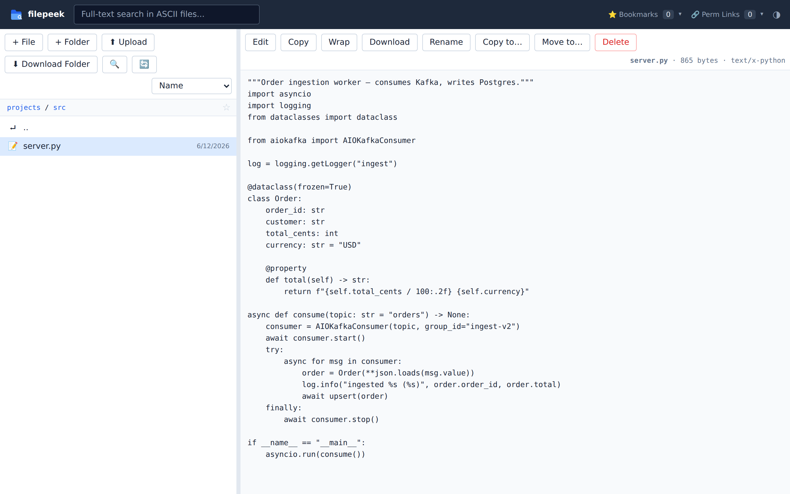

✏️ Inline editing
Fix a typo in the browser and save — no editor round-trip.
Your coding agent just wrote a pile of .md, .html, and .xlsx files. Stop squinting at raw markdown in a terminal — see them rendered.
▶ 78-second narrated tour
Markdown gets full rendering — headings, tables, syntax-highlighted code blocks —
and mermaid fences become real diagrams. The architecture doc your agent
wrote finally looks like an architecture doc.

Spreadsheets render as styled tables with all their sheets, documents and decks render as pages. Straight in the browser, on a machine that has never seen Microsoft Office.

When your agent writes an HTML dashboard or report, filepeek serves it directly — styles, layout and all. No "view source" squinting, no copying files out to open them.

Source files get syntax highlighting; CSV and TSV become sortable tables; images, SVG, and PDF display inline. HTML files are served directly, so the report your agent generated opens as a page, not as markup soup.

Filename search and full-content search across the whole tree. Every view has a permalink, so "look at this" is a URL — bookmarks keep your frequent files one click away.

Fix a typo in the browser and save — no editor round-trip.
Drop files in, pull files out, or grab a whole folder as a zip.
Share a rendered view as a stable URL; pin what you revisit.
Binds 127.0.0.1 locally; refuses to start exposed without auth. PBKDF2 passwords, signed sessions, per-IP lockout.
One Python file, one HTML file, no database. Read it over coffee.
Bearer-token API access for agents and CI: Authorization: Bearer …
WSL2 & Linux: one command, opens in your Windows browser. Any cloud server: paste one cloud-init file or run one installer — you get HTTPS, password auth, and a systemd service. Prefer zero public exposure? There's a Tailscale mode.
See all install options